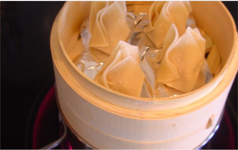

Chinese Dim Sum

INGREDIENTS
- 1 pound ground pork
- 1 large onion, chopped
- 1/2 bunch cilantro, chopped
- 1/2 teaspoon crushed red pepper flakes
- 2 teaspoons red curry paste
- 1/2 teaspoon garam masala
- 1/2 teaspoon chili powder
- 1/4 teaspoon onion powder
- 1/4 teaspoon garlic powder
- 1 cup all-purpose flour
- 1/4 cup water as needed
- 3 tablespoons peanut butter
- 1/2 teaspoon cayenne pepper
- 1 teaspoon white sugar
- 1 teaspoon vegetable oil
PREPARATION
- Combine pork, onion, cilantro, red pepper flakes, red curry paste, garam masala, chili powder, onion powder,
and garlic powder in a bowl.
- Mix well, then set aside. Place flour into a separate bowl. Slowly stir int the water as needed until a soft dough is achieved. There may be some water left over. Roll out walnut-sized
balls of dough into thin circles.
COOKING METHOD
- Fill each of the wrappers with about 1 tablespoon of the pork mixture. Moisten the edges of the wrapper, then
fold in half, sealing to create a half moon shape. Repeat with the remaining wrappers and filling. Place the
dumplings in a steamer over 1 inch of boiling water, and cover. Steam until the dough becomes glossy, about
10 minutes.
- To make sauce: Combine peanut butter, cayenne pepper, sugar, and vegetable oil in a microwave-safe glass or
ceramic bowl. Cook in the microwave on High for 30 seconds and stir. Serve with the dumplings.